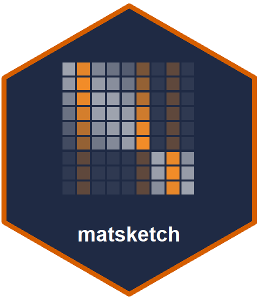

matsketch: randomized matrix computations from few entries and products
Source:R/matsketch-package.R
matsketch-package.RdTools for answering questions about a large positive-semidefinite matrix without forming or factorizing it: a low-rank approximation built from a few of its rows, its trace and diagonal from a handful of matrix-vector products, and fast solutions of regularized linear systems.
Main functions
rpchol(): low-rank approximation by randomly pivoted Cholesky.trace_est()anddiag_est(): trace and diagonal estimation by XTrace, XNysTrace, XDiag and Hutch++.nystrom(),nystrom_precond(),effective_dim()andpcg(): preconditioned conjugate gradients.reml_sketch(): variance components on a relationship matrix, withreml_exact()as a dense reference.kernel_matrix()andgrm_matrix(): kernel and genomic relationship matrices that are never formed, only evaluated where needed.
Author
Maintainer: Muhammad Farooqi mqfarooqi@gmail.com (ORCID)
Authors:
Muhammad Farooqi mqfarooqi@gmail.com (ORCID)